О ПРОЕКТЕ
Существуют парные валютные курсы. Но они отражают отношение одной валюты к другой. А если мы имеем множество таких отношений (множество парных курсов) то может стоит из них получить отдельные курсы для каждой валюты? Эти курсы называются "абсолютными валютными курсами". Методика перехода из парных валютных курсов к абсолютным валютным курсам показана в статье ниже.Формула частная
Вычисление абсолютного курса отдельной валюты происходит по следующей формуле:umnozhit{M_{nk}}}).png)
Здесь
.png) - абсолютный курс отдельной валюты,
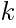 - порядковый номер валюты,
- абсолютный курс отдельной валюты,
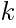 - порядковый номер валюты,
.png) - парный валютный курс отдельной пары валюты,
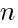 - порядковый номер валютной пары,
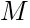 - матрица перехода от парных валютных курсов к абсолютным валютным курсам (значения матрицы доступны по ссылке),
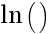 - функция взятия натурального логарифма,
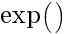 - функция взятия экспоненты.
- парный валютный курс отдельной пары валюты,
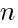 - порядковый номер валютной пары,
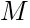 - матрица перехода от парных валютных курсов к абсолютным валютным курсам (значения матрицы доступны по ссылке),
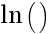 - функция взятия натурального логарифма,
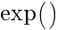 - функция взятия экспоненты.
Пример формулы
Буквально формула расчета одного из абсолютных валютных курсов выглядит следующим образом.Пример абсолютного валютного курса можно посмотреть по ссылке.
Формула матричная
Расчет абсолютных курсов в матричном виде показан в следующей формуле: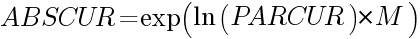
Здесь 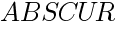 - матрица с векторами из абсолютных валютных курсов, 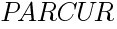 - матрица с векторами парных валютных курсов, - матрица перехода от парных валютных курсов к абсолютным валютным курсам (значения матрицы доступны по ссылке), - функция взятия натурального логарифма, - функция взятия экспоненты.
Статьи
Абсолютные валютные курсы
Центральная статья с изложением основ теории. Разбирается методика получения абсолютных курсов из парных. Даются ссылки на несколько статей с применением теории. (ABSCUR.RU, Kaggle, Google.DOCS, HABR, VC, Smart-lab.ru)Рейтинг стабильности абсолютных курсов валют
Ежедневно рассчитываются рейтинги стабильности мировых валют. Для этого берутся их абсолютные курсы и оценивается отношение стандартного отклонения к среднему значению. У кого это отношение меньше тот и стабильнее. В расчете можно увидеть рейтинги за последние 5 лет, год, полгода, квартал и месяц. (Kaggle, Google.DOCS, ABSCUR.RU, HABR, VC, Smart-lab.ru)Связанность мировых валют
Ввиду того что для валют получены абсолютные курсы стало возможным посмотреть на взаимозависимости между отдельными валютами. Ведь сравнивать парные курсы несколько не корректно. В парном курсе две валюты. И в другом парном пурсе еще две. Корреляция строится между двумя. Если взять все множество найденных корреляций, то их можно положить на граф зависомостей. (VC, Kaggle, Google.DOCS, ABSCUR.RU, HABR, VC, Smart-lab.ru)Получаем абсолютные курсы из парных кросс-курсов валют
Одна из первых статей. (HABR)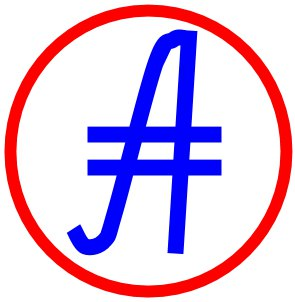
Зеркала на www.abscur.ru и на prog815.github.io